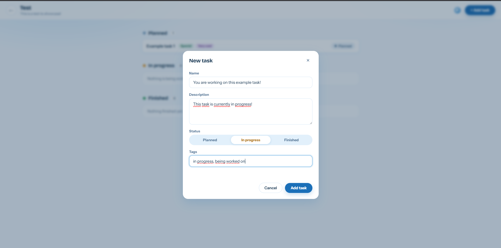
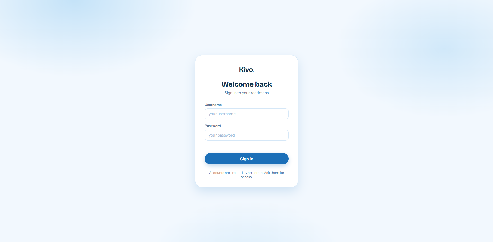
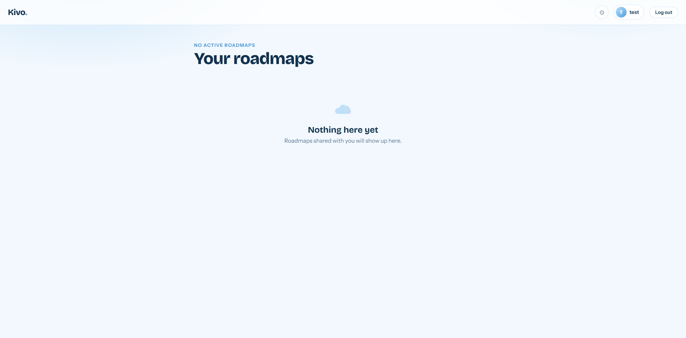
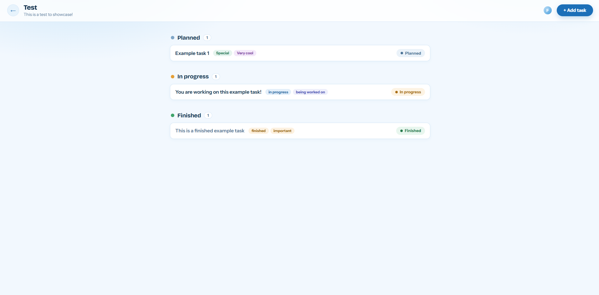
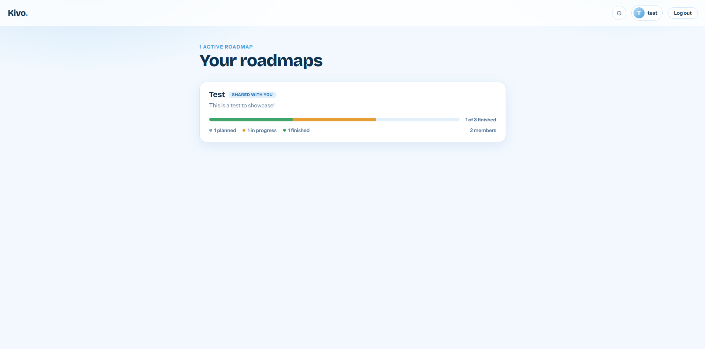
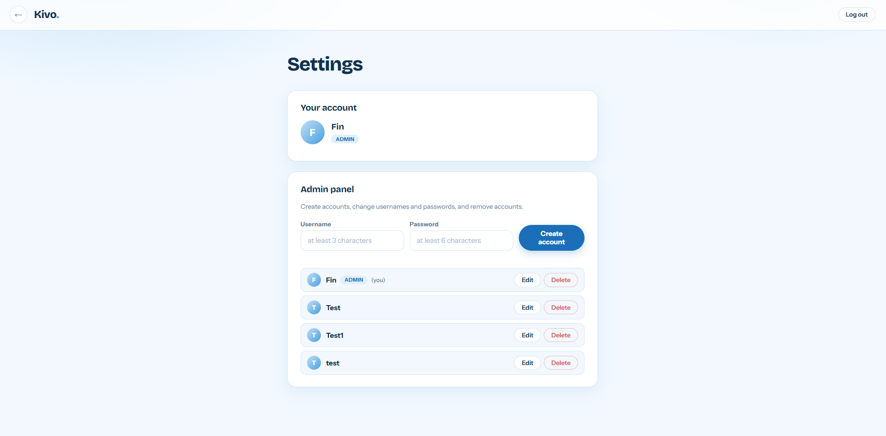

project
Kivo is a fully functional replacement for other roadmap software. Easier to use and set up than other roadmapping tools.

I built Kivo because i got sick and tired of websites like Trello just not working out of the box. It was originally a frontend only website but when i got my hands on my own server i decided to make a backend. I also added accounts, sharing and more stuff!
I used vanilla Javascript and Node JS + Express to build this.
I learned how to work with backends, account creation, authentication and much more backend related stuff! I also really enjoyed building this because its actually useful.
screenshots




